Array Broadcasting in NumPy
Broadcasting NumPy ka ek magical feature hai jo different shapes wale arrays ke beech bina explicit loops ya duplicate memory copies banaye arithmetic operations perform karta hai. Seekhiye right-to-left alignment rule, samajhiye kyu (2, 3) aur (3,) aapas me compatible hain jabki (2, 3) aur (2,) crash ho jate hain, aur dekhiye kaise (3, 1) aur (1, 4) milkar ek (3, 4) matrix generate karte hain!
00🎯 Learning Objectives
Is lesson ko dhyan se padhne ke baad aap in sabhi concepts me master ho jayenge:
- Broadcasting in Plain Language: Samajhna ki broadcasting kya hai aur ye manual loops se kitna zyada clean aur fast hai.
- Memory Efficiency without Duplication: Samajhna ki NumPy smaller array ko physically copy nahi karta, balki C-level pointers se efficiently iterate karta hai.
- Scalar with Arrays: 1D aur 2D arrays ke har element par single scalar (+, -, *, /) operations perform karna.
- The Three Golden Rules: Shapes ko right-to-left align karna, dimensions of size 1 ko stretch karna, aur missing dimensions ko handle karna.
- Predicting Output Shapes: Code run kiye bina mathematical reasoning se exact output shape calculate karna.
- 1D and 2D Compatibility: Deeply samajhna kyu
(2, 3) + (3,)successfully chalta hai aur kyu(2, 3) + (2,)fail hota hai. - Row and Column Vectors: Row vector
(1, 3)aur column vector(3, 1)ke combination se(3, 3)matrix grid create karna. - 3D Tensor Broadcasting: Batch processing me 3D arrays
(2, 3, 4)ke sath 1D aur 2D feature weights broadcast karna. - Real-Life Data Science Applications: Student grace marks, retail discount engines, employee salary allowances, IoT sensor calibration, aur ML normalization.
- Debugging Broadcasting Errors:
ValueError: operands could not be broadcast togetherko spot karna aur correct shape reshape karna.
01💡 Opening Hook — The Problem of Bonus Marks
Maan lijiye ek college student ke 3 subjects me marks hain:
- Python: 70 marks
- NumPy: 80 marks
- SQL: 90 marks
Teacher ne announce kiya ki tough exam ki wajah se har subject me 5 bonus marks add kiye jayenge. Agar hum traditional pure Python use karein, toh hume ek manual for loop chalana padega:
marks = [70, 80, 90]
updated_marks = []
for m in marks:
updated_marks.append(m + 5)
print("Loop Result:", updated_marks)Lekin NumPy me aapko koi loop likhne ki zaroorat nahi hai! Aap directly array me scalar number add kar sakte hain:
import numpy as np
marks = np.array([70, 80, 90])
bonus = 5
updated_marks = marks + bonus
print("NumPy Result:", updated_marks)
print("Array Shape:", updated_marks.shape)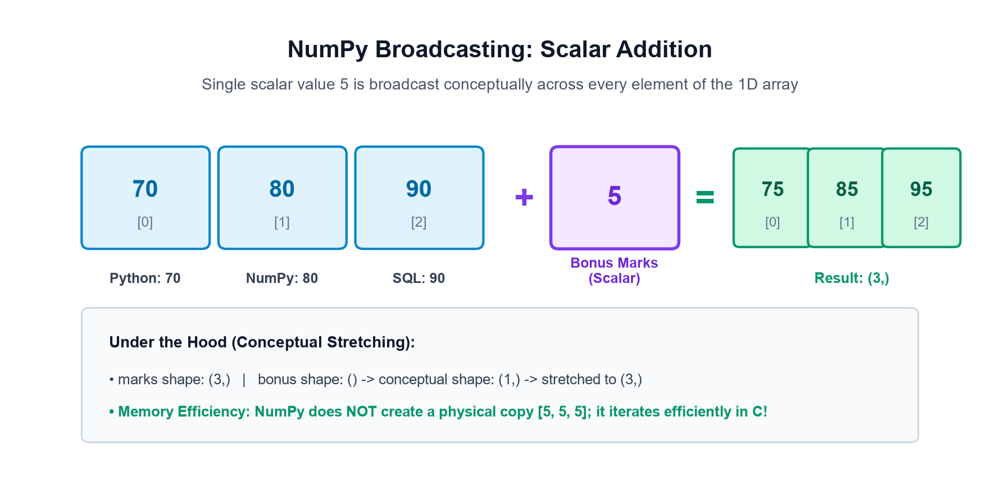
- Q1: Kya NumPy ne memory me secretly
[5, 5, 5]ka naya array banaya? (Nahi! Ye bina duplicate memory ke hota hai!) - Q2: Agar humare paas 4 students x 3 subjects ka 2D matrix ho, toh 1D row vector kaise add hoga?
- Q3: Kyu kuch shapes aapas me smoothly add ho jati hain, jabki doosri shapes par Python turant crash ho jata hai?
02📖 Section A — What is Broadcasting?
Broadcasting NumPy ka ek powerful aur smart mechanism hai jo arithmetic operations ke dauran different shapes wale arrays ko compatible banata hai.
"Jab do arrays ki shapes identical nahi hoti, lekin wo compatible dimension rules follow karti hain, toh NumPy smaller array ko conceptually 'stretch' (expand) karta hai taaki dono arrays ki shapes match ho sakein aur element-by-element operation execute ho sake."
Sabse important baat jo har Data Science engineer ko pata honi chahiye:
- No Physical Duplication: “Stretching” sirf ek conceptual idea hai. NumPy memory me smaller array ki duplicate copies create nahi karta! Isliye ye operation extremely fast aur memory-efficient hota hai.
- C-Speed Execution: Sara calculation compiled C loops ke andar execute hota hai, jisse Python interpreter ka per-element overhead zero ho jata hai.
- Universal Applicability: Machine Learning loss calculation, Image pixel brightness scaling, aur Statistical normalization me broadcasting backbone ka kaam karta hai.
Example 1: Adding Grace Marks to Student Array
import numpy as np
marks = np.array([65, 78, 85])
grace = 10
updated = marks + grace
print("Original Marks:", marks)
print("After +10 Grace:", updated)Example 2: Applying 10% Discount on Product Prices
import numpy as np
prices = np.array([500.0, 1000.0, 1500.0])
discount_multiplier = 0.90 # Pay 90% (10% off)
discounted_prices = prices * discount_multiplier
print("Original Prices:", prices)
print("Discounted Prices:", discounted_prices)03🔢 Section B — Broadcasting with a Scalar
Broadcasting ka sabse simple aur fundamental case hota hai Array + Scalar. Chahe array 1D ho ya 2D matrix, ek single scalar value sabhi elements par barabar apply hoti hai:
Example 1: Flat Discount on 1D Shop Prices
import numpy as np
prices = np.array([100, 200, 300, 400])
discounted = prices - 20 # Flat ₹20 off on all items
print("Original Prices:", prices)
print("Discounted Prices:", discounted)
print("Output Shape:", discounted.shape)Example 2: Bonus on 2D Student Marks Matrix
import numpy as np
# 2 Students x 3 Subjects Matrix
marks = np.array([
[60, 70, 80],
[75, 85, 95]
])
bonus = marks + 5
print("Bonus Marks Matrix:\n", bonus)
print("Shape:", bonus.shape)Aap scalar ke sath sabhi standard arithmetic operators use kar sakte hain:
- Addition (
+):arr + 5→ Har element me 5 add hoga. - Subtraction (
-):arr - 10→ Har element se 10 subtract hoga. - Multiplication (
*):arr * 2→ Har element double ho jayega. - Division (
/):arr / 2→ Har element half ho jayega (float result). - Exponentiation (
**):arr ** 2→ Har element ka square calculate hoga.
04📐 Section C — Understand Shapes Before Broadcasting
Broadcasting ko samajhne ke liye array ki shape ko accurately padhna sabse pehli requirement hai. Beginners aksar (3,) aur (1, 3) ko same samajh lete hain, jo aage jakar confusing errors create karta hai.
| Array Type | Shape Tuple | ndim | Visual Structure | Meaning |
|---|---|---|---|---|
| Scalar | () |
0 | 42 |
Single number, no axis |
| 1D Array | (3,) |
1 | [10, 20, 30] |
Single axis of length 3 |
| 2D Row Vector | (1, 3) |
2 | [[10, 20, 30]] |
1 Row, 3 Columns |
| 2D Column Vector | (3, 1) |
2 | [[10], [20], [30]] |
3 Rows, 1 Column |
| 2D Matrix | (2, 3) |
2 | 2 Rows x 3 Columns | Standard tabular grid |
Example: Inspecting Shape, Dimensions, and Size
import numpy as np
arr_1d = np.array([10, 20, 30])
row_vec = np.array([[10, 20, 30]])
col_vec = np.array([[10], [20], [30]])
print("1D Array: shape=", arr_1d.shape, "| ndim=", arr_1d.ndim)
print("Row Vector: shape=", row_vec.shape, "| ndim=", row_vec.ndim)
print("Column Vector: shape=", col_vec.shape, "| ndim=", col_vec.ndim)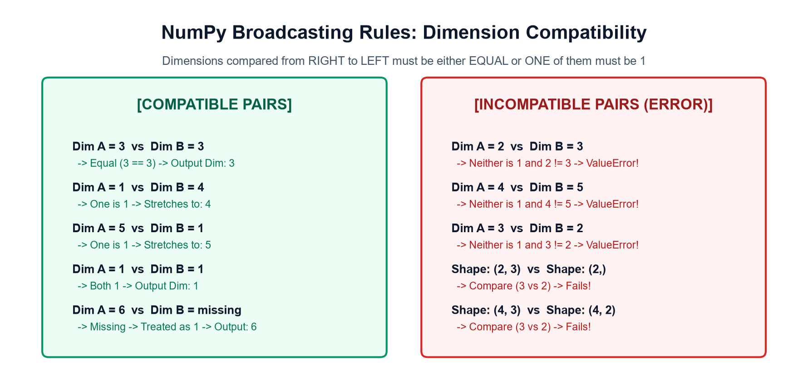
(3,) ek 1D sequence hai jisme rows ya columns ka koi concept nahi hota. Jabki (1, 3) ek 2D matrix hai jisme strictly 1 row aur 3 columns hote hain. Broadcasting me inka behavior alag hota hai!
05📜 Section D — The Three Broadcasting Rules
Ye is poore topic ka sabse core section hai. NumPy kisi bhi do arrays ko aapas me operate karne se pehle in teen golden rules ko step-by-step apply karta hai:
- Rule 1 (Right-to-Left Alignment): Dono arrays ki shapes ko unke trailing (rightmost) dimensions se shuru karke compare kiya jata hai.
- Rule 2 (Compatibility Condition): Har aligned dimension pair tabhi compatible maana jata hai jab:
• Dono dimensions EQUAL hon (e.g.3 == 3), YA
• Dono me se koi ek dimension 1 ho (e.g.1 vs 4). - Rule 3 (Missing Dimensions Prepend 1): Agar ek array me dimensions kam hain (jaise 2D vs 1D), toh missing leading (leftmost) dimensions ko 1 treat kiya jata hai.
- Failure Rule: Agar kisi bhi dimension pair me dono numbers alag hon aur koi bhi 1 na ho, toh broadcasting fail ho jati hai aur NumPy
ValueErrorthrow karta hai!
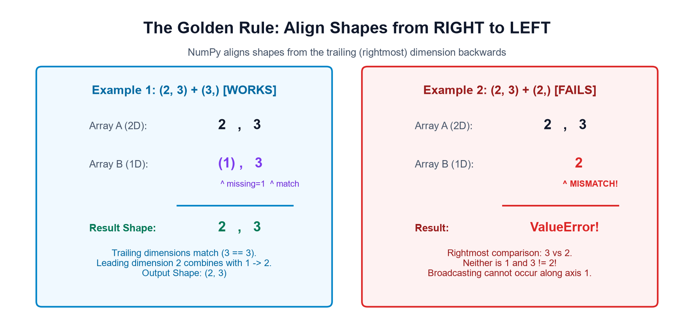
Example 1: Successful Broadcasting (2, 3) + (3,)
import numpy as np
mat = np.zeros((2, 3))
vec = np.ones(3) # Shape (3,)
result = mat + vec
print("Result Shape:", result.shape)
print("Result:\n", result)Example 2: Incompatible Shapes Safely Caught with try/except
import numpy as np
mat = np.zeros((2, 3))
vec_invalid = np.ones(2) # Shape (2,)
try:
res = mat + vec_invalid
except ValueError as e:
print("Caught Expected ValueError:", e)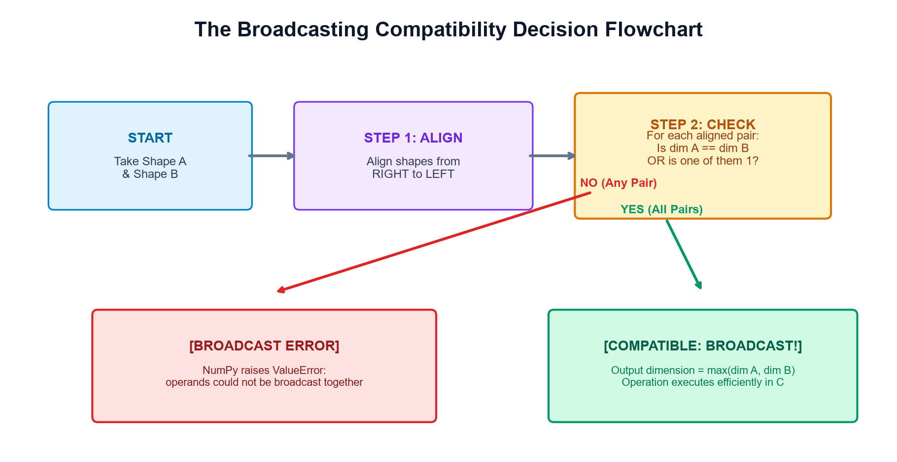
06🧩 Section E — Broadcasting Between 1D and 2D Arrays
Data analysis me sabse zyada frequent pattern hota hai ek 2D matrix ko 1D array ya single vector ke sath combine karna. Aaiye iske chaaron important cases ko deeply samjhein:
1D array matrix ke rightmost dimension (columns) ke sath align hota hai aur vertically dono rows par add hota hai:
import numpy as np
matrix = np.array([
[10, 20, 30],
[40, 50, 60]
]) # Shape: (2, 3)
row = np.array([1, 2, 3]) # Shape: (3,)
result = matrix + row
print("Case 1 Result:\n", result)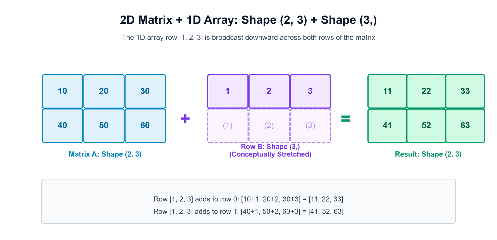
Column vector ka dimension 1 hone ki wajah se wo horizontally teeno columns me broadcast hota hai:
import numpy as np
matrix = np.array([
[10, 20, 30],
[40, 50, 60]
])
column = np.array([[1], [2]]) # Shape: (2, 1)
result = matrix + column
print("Case 2 Result:\n", result)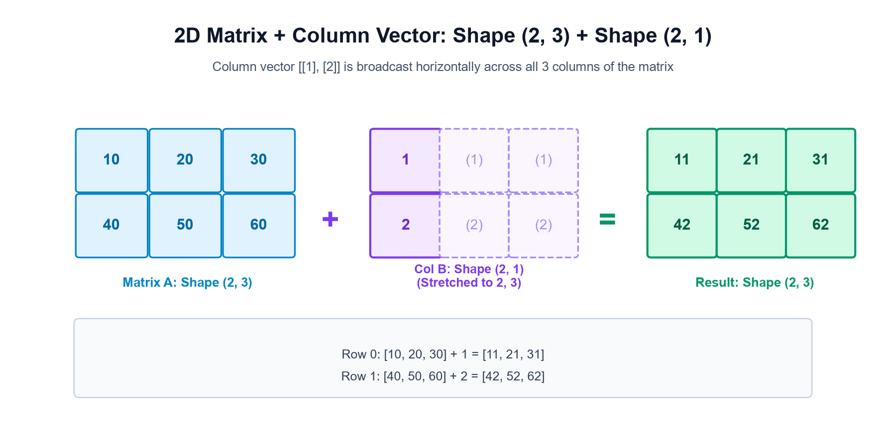
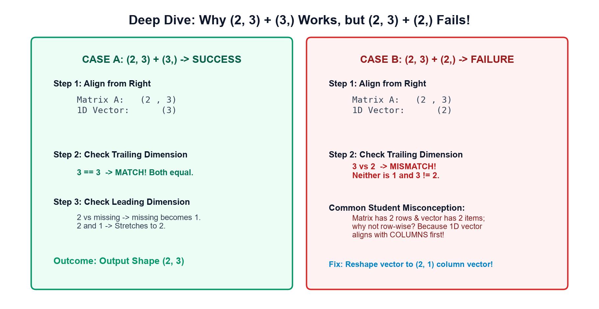
07⚡ Section F — Broadcasting with Row Vectors & Column Vectors
Ab dekhte hain sabse fascinating broadcasting case: Row Vector (1, 3) + Column Vector (3, 1).
Rules apply karte hain:
- Trailing dimension:
3vs1→ Stretches to3. - Leading dimension:
1vs3→ Stretches to3. - Final Output Shape:
(3, 3)Matrix Grid!
import numpy as np
row = np.array([[10, 20, 30]]) # Shape: (1, 3)
column = np.array([[1], [2], [3]]) # Shape: (3, 1)
result = row + column
print("Resulting 3x3 Grid:\n", result)
print("Shape:", result.shape)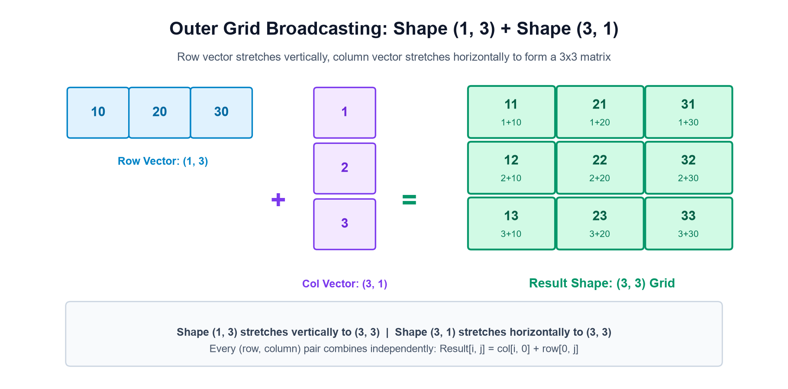
fahr = (celsius_col * 9/5) + 32
08📦 Section G — Broadcasting with Multiple Dimensions (3D Arrays)
Jab hum Machine Learning batches ya Image Processing (RGB channels) ke sath kaam karte hain, toh 3D arrays aate hain. Yahan bhi same right-to-left alignment rules perfectly apply hote hain!
Right-to-left alignment:
Tensor 3D: ( 2 , 3 , 4 )
Vector 1D: ( , , 4 )
----------------------------
Output Shape: ( 2 , 3 , 4 )import numpy as np
# 2 batches x 3 rows x 4 columns
tensor = np.ones((2, 3, 4))
weights = np.array([1, 2, 3, 4]) # Shape: (4,)
result = tensor + weights
print("Result Shape:", result.shape)
print("Batch 0, Row 0:\n", result[0, 0])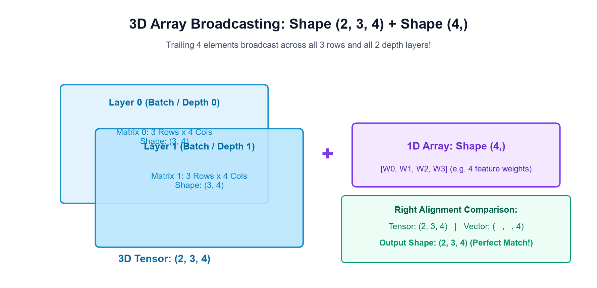
09📊 Section H — Broadcasting for Real-Life Data Analysis
Industry-grade workflows me broadcasting har jagah use hoti hai. Aaiye 4 practical real-life scenarios dekhte hain:
4 students ke 3 subjects me marks hain. Maths tough tha toh +5, Physics me +3, aur Chemistry me +2 grace marks add karne hain:
import numpy as np
marks = np.array([
[68, 75, 82],
[55, 60, 70],
[90, 92, 88],
[72, 65, 78]
]) # (4, 3)
grace = np.array([5, 3, 2]) # (3,)
final_marks = marks + grace
print("Final Marks (4x3):\n", final_marks)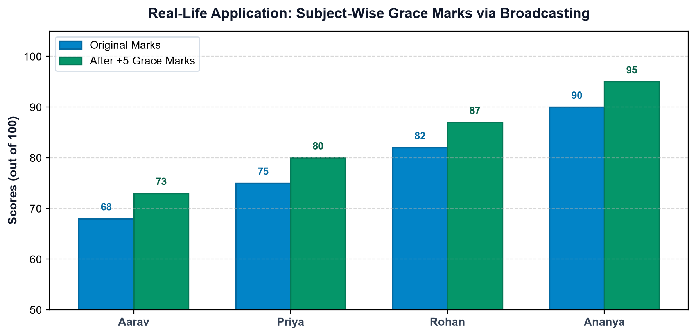
Sabhi product categories par flat 15% discount apply karke discounted prices calculate karna:
import numpy as np
prices = np.array([2500, 4000, 1800, 900, 1500])
discounted = prices * (1 - 0.15)
print("15% Off Prices:", discounted)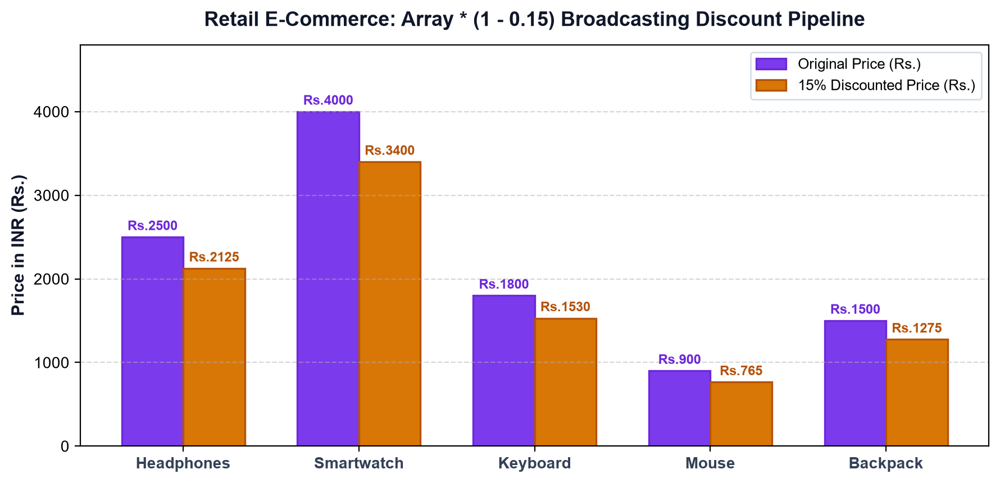
Multiple sensors me zero-drift offsets hote hain. Unhe column-wise broadcast karke ek hi step me calibrate kiya jata hai:
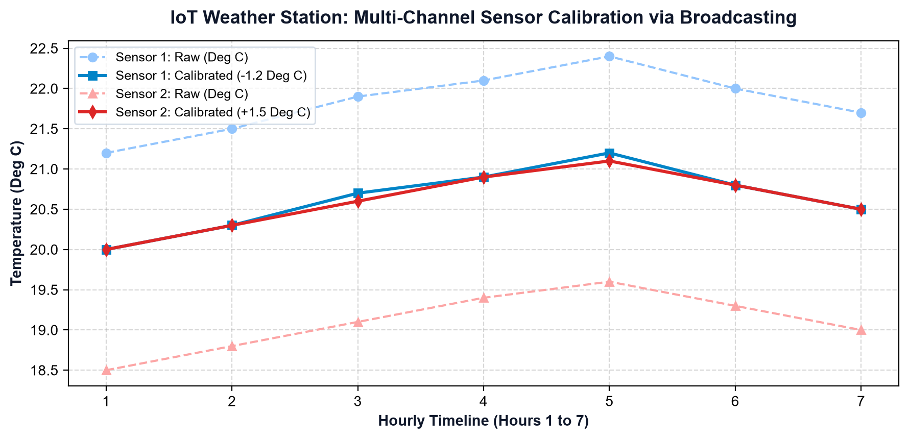
ML models (jaise Gradient Descent, KNN, SVM) ko fast converge karne ke liye features ko mean 0 aur standard deviation 1 par scale kiya jata hai:
normalized_features = (X - np.mean(X, axis=0)) / np.std(X, axis=0)Yahan X ki shape (N, D) hoti hai aur mean ki shape (D,) hoti hai — broadcasting in dono ko perfectly harmonize karti hai!
10⚡ Section I — Broadcasting versus Traditional Loops
Data Science aur Python interviewers aksar puchte hain: "Why prefer NumPy broadcasting over standard Python for-loops?"
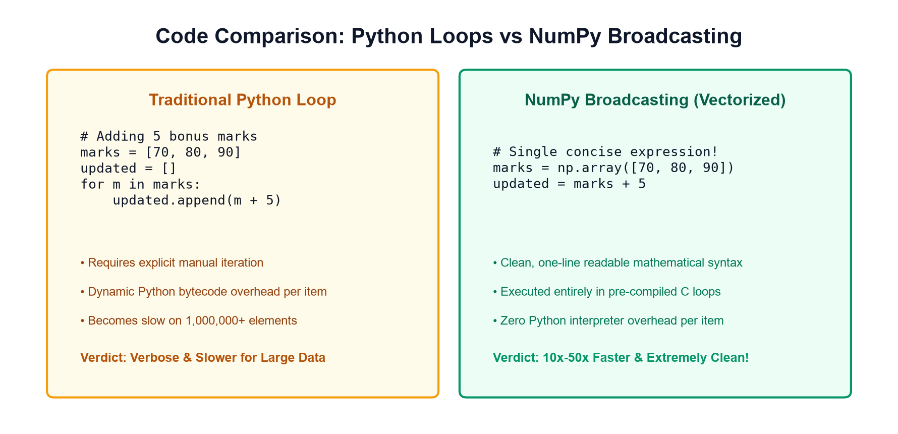
| Evaluation Parameter | Python For-Loop | NumPy Broadcasting |
|---|---|---|
| Code Lines | 4 to 6 lines (append, temporary list) | 1 concise line (arr + scalar) |
| Execution Level | Python Bytecode Interpreter | Optimized Pre-Compiled C Loops |
| Type Checking | Dynamic type check at every iteration | Homogeneous dtype checked once |
| Large Array Speed | Slow on 1,000,000+ items | 10x to 50x faster |
| Readability | Imperative boilerplate | Declarative mathematical notation |
11🚨 Section J — Broadcasting Errors & Debugging
Broadcasting ke dauran aane wali 8 common galtiyan aur unke verified fixes:
Buggy Assumption: Matrix (3, 2) me 3 rows hain aur 1D array me 3 elements hain, toh student sochta hai ki wo row-by-row add ho jayega.
# BUGGY:
mat = np.ones((3, 2))
vec = np.array([1, 2, 3]) # Shape (3,)
res = mat + vec
# ValueError: operands could not be broadcast together with shapes (3,2) (3,)Why It Fails: 1D array trailing dimension (columns: 2 vs 3) ke sath align hota hai, na ki rows ke sath!
Verified Fix: Array ko 2D column vector me reshape karein: vec.reshape(3, 1) ya vec[:, np.newaxis].
# VERIFIED FIX:
res = mat + vec.reshape(3, 1) # Shape becomes (3, 2)Buggy Thinking: (4, 3) aur (4,) ko dekhkar student sochta hai ki pehle 4 match ho gaya!
Fact: NumPy hamesha RIGHT se compare karta hai: 3 vs 4 compare hoga jo incompatible hai! Output will fail with ValueError.
Accidental Code: col (3, 1) + row (1, 3) likhne par 3 elements nahi, balki 9 elements ka (3, 3) matrix ban jata hai!
Fix: Hamesha check karein ki aap 1D array chahte hain ya 2D grid matrix.
Buggy Code: np.zeros((5, 3)) + np.ones((5, 2))
Issue: Columns 3 vs 2 match nahi karte aur koi bhi 1 nahi hai. Isko broadcast nahi kiya ja sakta!
Dangerous Habit: Error aane par bina soche samjhe .reshape(-1) ya .T lagana jisse numbers galat student ya product ke sath jud jate hain!
Best Practice: Pehle paper par right-alignment diagram banayein, phir conscious reshape karein.
Explanation: (4, 3, 2) aur (2,) me missing dimensions (1, 1, 2) treat hoti hain, isliye ye compatible hai aur output shape (4, 3, 2) banegi.
Fact: a + b hamesha ek brand new array return karta hai. Original array tab tak change nahi hota jab tak aap a += b na likhein.
Context: Image (H, W, 3) me RGB channel subtract karte waqt vector ki shape (3,) honi chahiye. Agar (H,) vector denge toh crash ho jayega!
12✍️ Section K — Practice Exercises & Challenges
A. Predict the Output Shape (10 Questions)
Pehle man me solve karein, phir answer verify karein:
Q1: (4, 3) + ()
Answer: (4, 3). Scalar sabhi elements par broadcast hota hai.
Q2: (4, 3) + (3,)
Answer: (4, 3). Trailing dimension 3 == 3 match hoti hai.
Q3: (4, 3) + (4,)
Answer: ValueError! (Incompatible: 3 vs 4 mismatch).
Q4: (4, 3) + (4, 1)
Answer: (4, 3). Column 1 stretches to 3, row 4 == 4 match.
Q5: (1, 5) + (5, 1)
Answer: (5, 5). Outer grid matrix banta hai.
Q6: (3, 1, 4) + (2, 4)
Answer: (3, 2, 4). 4==4, 1 stretches to 2, 3 remains 3.
Q7: (5, 2) + (2, 5)
Answer: ValueError! Trailing 2 vs 5 mismatch.
Q8: (6, 1) + (6,)
Answer: (6, 6). (6, 1) + (1, 6) conceptually combines to (6, 6)!
Q9: (2, 3, 5) + (5,)
Answer: (2, 3, 5). Trailing 5 matches, leading dimensions remain.
Q10: (3, 3) * 0
Answer: (3, 3) matrix of all zeros.
B. Write the Code (8 Exercises)
Exercise 1: Celsius to Kelvin Array Conversion
celsius = np.array([20, 25, 30])
kelvin = celsius + 273.15
print(kelvin) # [293.15 298.15 303.15]Exercise 2: Multiply 2D Matrix by Scalar Factor
matrix = np.array([[1, 2], [3, 4]])
scaled = matrix * 10
print(scaled) # [[10, 20], [30, 40]]Exercise 3: Row Vector Broadcasting on Matrix
mat = np.zeros((2, 3))
row = np.array([1, 2, 3])
print(mat + row) # [[1, 2, 3], [1, 2, 3]]Exercise 4: Column Vector Broadcasting on Matrix
mat = np.zeros((2, 3))
col = np.array([[10], [20]])
print(mat + col) # [[10, 10, 10], [20, 20, 20]]Exercise 5: Generate 4x4 Grid from 1D Arrays
row = np.array([[1, 2, 3, 4]])
col = np.array([[10], [20], [30], [40]])
grid = row + col
print(grid.shape) # (4, 4)Exercise 6: Z-Score Normalization of Array
arr = np.array([10.0, 20.0, 30.0, 40.0])
norm = (arr - np.mean(arr)) / np.std(arr)
print("Mean:", np.isclose(np.mean(norm), 0.0))Exercise 7: Fix Incompatible (4, 3) + (4,) Crash
mat = np.ones((4, 3))
vec = np.array([1, 2, 3, 4])
fixed = mat + vec.reshape(4, 1)
print(fixed.shape) # (4, 3)Exercise 8: 3D Array Weight Addition
tensor = np.zeros((2, 2, 2))
weights = np.array([5, 10])
print(tensor + weights)C. Debugging Challenges (6 Questions)
Challenge 1: Fixing Shape (3, 2) + (3,)
Bug: 1D array aligns with column count (2), but has 3 elements.
Fix: arr.reshape(3, 1) to align with 3 rows.
Challenge 2: Accidental Outer Product
Bug: a[:, None] + b results in 2D matrix when 1D was desired.
Fix: Ensure arrays are 1D with matching lengths before adding.
Challenge 3: Division by Zero in Normalization
Bug: Constant column has std = 0 causing NaN.
Fix: Add epsilon: (X - mean) / (std + 1e-8).
Challenge 4: Incompatible 3D Batch
Bug: Tensor (10, 5, 2) + vector (5,).
Fix: Vector must be reshaped to (5, 1) or (1, 5, 1).
Challenge 5: Modifying In-Place with Incompatible Shape
Bug: a += b fails if b would require expanding a's shape.
Fix: Reassign: a = a + b.
Challenge 6: Misinterpreting Left-to-Right Matching
Bug: Thinking (2, 4) matches (2,).
Fix: Trailing dimension 4 != 2. Reshape to (2, 1).
D. Multiple Choice Questions (8 Questions)
Q1: In which direction does NumPy compare array shapes?
A) Left to right B) Right to left C) Top to bottom D) Arbitrary
Correct Answer: B) Right to left (from the trailing dimension backwards).
Q2: Two dimensions are compatible when:
A) Both are even B) They are equal, or one of them is 1 C) Sum is greater than 10 D) Neither is 1
Correct Answer: B) They are equal, or one of them is 1.
Q3: What is the output shape of (3, 1) + (1, 4)?
A) (3, 1) B) (1, 4) C) (3, 4) D) ValueError
Correct Answer: C) (3, 4).
Q4: Why does (2, 3) + (2,) fail?
A) Trailing dimensions 3 and 2 are unequal and neither is 1
B) NumPy doesn't support 2D arrays
C) First dimensions don't match
D) Result is too large
Correct Answer: A.
Q5: Does NumPy create physical memory duplicates during broadcasting?
A) Yes, always creates full array copy
B) No, it iterates conceptually using strides without duplicate copies
C) Only for arrays smaller than 100 elements
D) Only in Python 2
Correct Answer: B.
Q6: What shape tuple represents a single Python scalar in NumPy?
A) (0,) B) (1,) C) () D) (None,)
Correct Answer: C) () (Empty tuple, 0 dimensions).
Q7: What is the output shape of array of shape (5, 1, 3) + (2, 1)?
A) (5, 2, 3) B) (5, 1, 3) C) (2, 3) D) ValueError
Correct Answer: A) (5, 2, 3).
Q8: Which function/syntax converts a 1D array of shape (3,) to (3, 1)?
A) arr.reshape(3, 1) B) arr[:, np.newaxis] C) arr[:, None] D) All of the above
Correct Answer: D) All of the above.
E. Real-Life Mini-Challenges (3 Scenarios)
13🚀 Section L — Final Mini-Project: Smart Student Marks & Discount Analyzer
Ab humne jitne bhi broadcasting rules seekhe hain — scalar arithmetic, 1D row broadcasting, 2D column vector alignment, aur real-world normalization — unhe ek complete, practical educational mini-project me implement karte hain!
import numpy as np
print("=== SMART STUDENT MARKS & DISCOUNT ANALYZER ===")
# Part 1: Smart Student Marks Analyzer
student_names = ["Aarav", "Priya", "Rohan", "Ananya"]
subject_names = ["Maths", "Physics", "Chemistry"]
# 4 Students x 3 Subjects Matrix
raw_exam_marks = np.array([
[72, 68, 75],
[85, 79, 90],
[60, 58, 64],
[91, 88, 94]
])
print("\n1. Raw Marks Matrix (4 Students x 3 Subjects):\n", raw_exam_marks)
print(" Input Shape:", raw_exam_marks.shape)
# Subject-wise Grace: Maths +5, Physics +7, Chemistry +3 (Shape: 3,)
difficulty_grace = np.array([5, 7, 3])
adjusted_marks = raw_exam_marks + difficulty_grace
print("\n2. After Subject-wise Grace Addition:\n", adjusted_marks)
print(" Output Shape:", adjusted_marks.shape)
# Student-wise Attendance Bonus: Column Vector (Shape: 4, 1)
attendance_bonus = np.array([[2], [3], [1], [4]])
final_student_report = adjusted_marks + attendance_bonus
print("\n3. Final Student Report (Attendance Bonus Added):\n", final_student_report)
print(" Final Shape:", final_student_report.shape)
# Part 2: Retail Product Discount Analyzer
retail_prices = np.array([2500, 4000, 1800, 900, 1500]) # Shape (5,)
discount_percentage = 0.15 # 15% discount scalar
discount_amount = retail_prices * discount_percentage
final_prices = retail_prices - discount_amount
print("\n4. Retail Product Discount Analysis:")
print(" Original Prices:", retail_prices, "| Shape:", retail_prices.shape)
print(" 15% Discount Amounts:", discount_amount)
print(" Final Prices:", final_prices)Two Extension Challenges:
- Extension 1: Agar kisi student ke marks 100 se exceed ho jate hain (jaise Ananya ke 101), toh
np.clip(final_student_report, 0, 100)use karke scores ko 100 par cap karein. - Extension 2: Product prices par differential category tax add karein: Electronic items par 18% GST aur Clothing par 5% GST using a category tax rate array.
14📑 Section M — Quick Reference Cheat Sheet & Checklist
NumPy Broadcasting rules aur shape transformations ka ultimate quick-lookup table:
| Operation | Shape A | Shape B | Aligned Right-to-Left | Output Shape | Status |
|---|---|---|---|---|---|
| Scalar + Array | (4, 3) |
() |
(4, 3) vs (1, 1) |
(4, 3) |
✅ Success |
| Matrix + Row | (4, 3) |
(3,) |
(4, 3) vs (1, 3) |
(4, 3) |
✅ Success |
| Matrix + Column | (4, 3) |
(4, 1) |
(4, 3) vs (4, 1) |
(4, 3) |
✅ Success |
| Outer Grid Matrix | (1, 3) |
(3, 1) |
(1, 3) vs (3, 1) |
(3, 3) |
✅ Success |
| 3D Tensor + Vector | (2, 3, 4) |
(4,) |
(2, 3, 4) vs (1, 1, 4) |
(2, 3, 4) |
✅ Success |
| Mismatched Trailing | (2, 3) |
(2,) |
(2, 3) vs (1, 2) → 3 != 2 |
None |
❌ ValueError |
| Mismatched Columns | (4, 3) |
(4, 2) |
(4, 3) vs (4, 2) → 3 != 2 |
None |
❌ ValueError |
- Broadcasting ka basic concept samajh aa gaya (scalar sabhi elements par apply hota hai).
- Right-to-left dimension alignment rule clear hai.
- Kyu
(2, 3)aur(3,)compatible hain aur(2, 3)aur(2,)incompatible hain, explain kar sakte hain. -
(1, 3)row vector aur(3, 1)column vector se(3, 3)grid banana samajh gaye. - 3D array broadcasting ke rules aur real-world use cases clear hain.
- Student marks aur discount mini-project run karke verify kar liya.
-
ValueError: operands could not be broadcast togetheraane par debug karna aata hai.